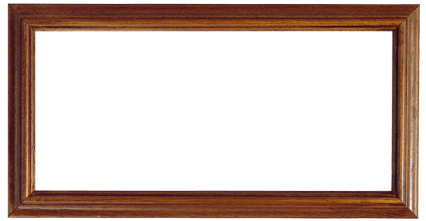
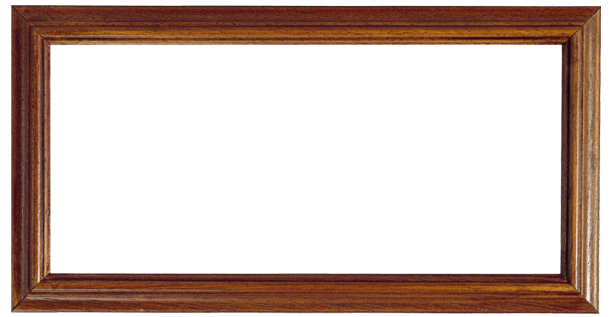

一段随笔
每个人对佛的理解不一样，这也跟人的性情有关。你看有的人刻的佛，要么奸笑，要么淫笑，还有刻的眉苦脸的。很难刻。佛像一刻就知道，那个味道很难把握，怎么能刻出那种神秘的，纯净的微笑，那是最难的。 文物其实跟人是一样的，你看，我们从过去最早的时候说，玉有六德，以玉比君子。玉就一块破石头，它有什么德性啊？但是中国人就能从上面看出德性来。 所以中国人做一把椅子，就像在做一个人一样，他是用人的品格来要求这个椅子的。中国古代人讲究格物，就是以自身来观物，又以物来观自己。 所以故宫这些东西是有生命的，人在制物的过程中，总是要把自己想办法融到里头去。人在这个世上来了，走了一趟，虽然都想在世界上留点啥，觉得这样自己才有价值。 很多人都一般认为，文物修复工作者是因为把这个文物修好了，所以他有价值。 其实不见得是这么一个简单的方面，他在修这个文物的过程中，他跟它的交流，他对它的体悟，他上面已经把自己也融到里头。这样的物自然就承载了人的意识，承载了人的审美，承载了人的认识。 文物是死的，要文物干什么，要文物的目的就是为了要让它传播文化，不是说文物就是为了保留一个物品放在那儿。 那没有什么价值。

 
